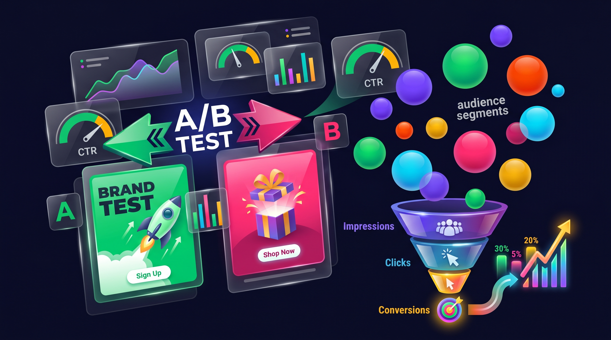

Cada mes, 7 millones de dominicanos abren Facebook. 4.2 millones usan Instagram. Y la mayoría de los negocios en República Dominicana que corren Meta Ads están desperdiciando más de la mitad de su presupuesto. No porque la plataforma no funcione — sino porque la usan mal. Esta guía cubre exactamente qué funciona en Meta Ads en 2026 para el mercado dominicano, con estructuras de campaña probadas, creatividades que convierten y presupuestos reales.
Si ya leíste nuestra guía completa de marketing digital en RD, sabes que Meta Ads es uno de los canales más poderosos para negocios locales. Ahora vamos a profundizar en cómo hacerlo bien — paso a paso, sin rodeos.
Por Qué Meta Ads Sigue Siendo el Canal #1 para Negocios en RD
En un país donde Google Ads todavía es subutilizado y TikTok Ads apenas está despegando, Meta Ads domina por una razón simple: es donde está la gente. Facebook no es solo una red social en República Dominicana — es la infraestructura digital del país. Los dominicanos consultan Facebook para buscar negocios, leer reseñas, enviar mensajes directos y hasta comparar precios.
Instagram, por su parte, se ha convertido en el escaparate visual de los negocios locales. El 78% de los compradores online en RD han comprado algo que vieron en Instagram. Eso no es engagement — son ventas reales.
¿Y la competencia publicitaria? Baja. Comparado con Estados Unidos donde el CPM (costo por mil impresiones) promedio supera los US$15, en República Dominicana puedes conseguir CPMs de US$2 a US$6. Eso significa que con el mismo presupuesto llegas a 3-5 veces más personas que un negocio similar en Miami.
Además, Meta ha integrado señales de WhatsApp, Messenger e Instagram en su algoritmo de entrega. Eso significa que en 2026, Advantage+ usa datos de más de mil millones de conversaciones mensuales para encontrar a tu cliente ideal. En un mercado como RD donde el 78% usa WhatsApp diariamente, esa señal es oro puro.
Cómo Estructurar Campañas de Meta Ads que Realmente Convierten
El error más común que vemos en negocios dominicanos es crear un solo anuncio, ponerle "boost" y esperar resultados. Eso no es una estrategia — es tirar dinero. Una campaña de Meta Ads que convierte tiene una estructura clara con tres niveles.
Estructura de una campaña que convierte
(Objetivo)
(Audiencia)
(Creatividad)
Page
(Cierre)
Nivel 1: La campaña. Aquí defines el objetivo. Para negocios locales en RD, los tres objetivos que mejor funcionan son: Leads (formularios), Tráfico (enviar a landing page) y Mensajes (WhatsApp directo). No uses "Alcance" ni "Engagement" si quieres ventas — esos objetivos optimizan para likes, no para dinero.
Nivel 2: El Ad Set. Aquí defines a quién le muestras el anuncio. La segmentación para negocios locales en RD debe incluir:
- Ubicación: Radio de 5-15 km alrededor de tu negocio (o la ciudad específica)
- Edad: Según tu cliente ideal — no dejes el rango predeterminado de 18-65
- Intereses: Específicos a tu industria, no genéricos. "Ortodoncia" funciona mejor que "Salud"
- Audiencias lookalike: Si ya tienes una lista de clientes, súbela y deja que Meta encuentre personas similares
Nivel 3: El anuncio. Es lo que la persona ve. En 2026, la creatividad es la segmentación — un anuncio mediocre con segmentación perfecta pierde contra un anuncio excelente con segmentación amplia. Más sobre esto en la siguiente sección.
Y la pieza más crítica que la mayoría ignora: lo que pasa DESPUÉS del clic. Si tu anuncio envía al usuario a tu perfil de Instagram o a tu página de Facebook, estás perdiendo conversiones. El anuncio debe enviar a una landing page dedicada con un solo objetivo: que la persona deje sus datos o te escriba por WhatsApp. Sin menú de navegación, sin distracciones — una oferta clara y un botón de acción.
AGENDA UNA CONSULTA GRATISCreatividades Ganadoras: Lo que Funciona en Meta Ads en 2026
En 2026, la creatividad ES la segmentación. Meta lo ha dicho explícitamente: con Advantage+ y la IA manejando la distribución, lo único que tú controlas realmente es qué le muestras a la gente. Y eso define si tu campaña genera RD$10 por lead o RD$200.
Después de gestionar campañas para múltiples negocios en RD, estos son los patrones que vemos consistentemente en los anuncios que mejor convierten:
7 elementos de una creatividad ganadora
El formato que más está convirtiendo en RD en 2026 es el video corto estilo UGC. Una persona real — puede ser el dueño del negocio, un empleado o un cliente — hablando directamente a cámara con el teléfono. Sin producción elaborada, sin música de stock, sin animaciones. Alguien que dice "Mira, yo tenía este problema y así lo resolví" genera más confianza que un anuncio con producción de TV.
¿Por qué funciona? Porque se siente auténtico. El cerebro del usuario está entrenado para ignorar lo que parece anuncio. Un video que parece un post normal de amigo pasa el filtro y logra que la persona lo vea completo.
Para negocios de servicio (dentistas, abogados, consultores), el antes/después sigue siendo el formato rey. Muestra el resultado, no el proceso. A nadie le importa tu equipo de última generación — les importa cómo van a verse después del tratamiento.
Para e-commerce y productos físicos, el carrusel funciona excepcionalmente bien. Cada slide muestra un beneficio diferente o un ángulo del producto. La primera imagen debe ser la más fuerte — si no genera clic, las demás no existen.

Advantage+ y la IA de Meta: Qué Cambió en 2026 y Cómo Aprovecharlo
Si llevas tiempo corriendo Facebook Ads, olvida lo que sabías sobre segmentación manual. En 2026, Meta ha cruzado un umbral que pocos anticipaban: automatización de campaña de extremo a extremo con inteligencia artificial.
Advantage+ ya no es una opción experimental — es el estándar. Y funciona así: le das a Meta tu presupuesto, tus creatividades y tu landing page. La IA se encarga del resto: encuentra la audiencia, elige los placements (feed, stories, reels, messenger), ajusta las pujas en tiempo real y hasta genera variaciones de tus anuncios.
Las novedades más relevantes para negocios en RD:
- Image-to-Video: Meta puede tomar hasta 20 fotos de tus productos y convertirlas en anuncios de video multi-escena, optimizados para cada placement. Subes las fotos, la IA arma el video
- Variaciones automáticas de copy: Escribes un headline y Meta genera 5 variaciones, prueba cada una y se queda con la que mejor convierte
- Señales conversacionales: La IA ahora usa datos de WhatsApp, Messenger e Instagram DMs para entender mejor la intención de compra. En RD, donde el cierre pasa por WhatsApp, esto es una ventaja masiva
- Advantage+ Shopping Campaigns (ASC): Para e-commerce, estas campañas automatizadas están generando costos por adquisición 20-30% más bajos que las campañas manuales
¿Significa que ya no necesitas saber de Meta Ads? No. Significa que el trabajo cambió. Antes eras un operador de plataforma — ahora eres un estratega creativo. Tu valor está en entender a tu audiencia, crear mensajes que resuenen y construir embudos que conviertan después del clic. La IA se encarga de la distribución.
Presupuestos Reales: Cuánto Invertir en Meta Ads en República Dominicana
La pregunta del millón. Y la respuesta honesta es: depende. Pero vamos a darte números reales basados en lo que vemos en el mercado dominicano — no cifras de Estados Unidos que no aplican aquí.
Presupuesto mensual vs resultados esperados en RD
Estos números son la inversión publicitaria — lo que va directo a Meta. El fee de la agencia o freelancer que gestiona las campañas es aparte y típicamente va de US$300 a US$1,500/mes en RD, dependiendo del alcance del servicio.
Los costos por resultado varían enormemente según la industria. Algunos benchmarks del mercado dominicano:
- Servicios profesionales (abogados, contadores, consultores): RD$80-250 por lead
- Salud (dentistas, dermatólogos, nutricionistas): RD$50-150 por lead
- Restaurantes y gastronomía: RD$15-50 por interacción (mensaje o reserva)
- E-commerce / retail: RD$30-100 por compra (depende del ticket)
- Educación (cursos, talleres): RD$40-120 por registro
La regla más importante con los presupuestos: no corras una campaña por 3 días con RD$1,000 y concluyas que "no funciona". Meta necesita mínimo 50 eventos de conversión por semana para optimizar correctamente. Si tu costo por lead es RD$100, necesitas un presupuesto que genere al menos 50 leads por semana — eso son RD$5,000/semana o RD$20,000/mes como mínimo viable.
Del Clic al Cliente: Cómo Conectar Meta Ads con WhatsApp y CRM
Aquí es donde la mayoría de los negocios en RD pierden dinero. Generan leads con Meta Ads — pero no tienen un sistema para convertirlos en clientes. El anuncio funcionó. La persona dejó sus datos. ¿Y después? Nadie le responde. O le responden 6 horas después. O le envían un mensaje genérico de "Gracias por contactarnos".
En República Dominicana, la venta se cierra por WhatsApp. Punto. No importa si vendes servicios de consultoría o hamburguesas — el cliente quiere escribir por WhatsApp, recibir respuesta rápida y sentir que está hablando con alguien real. Tu trabajo es construir un sistema que haga esto de forma automática y consistente.
Así funciona el flujo completo que recomendamos:
- El anuncio genera el clic — creatividad fuerte con CTA claro ("Agenda tu cita" o "Pide tu cotización")
- La landing page captura el lead — formulario simple: nombre, teléfono, qué necesita. Nada más
- El CRM recibe el lead automáticamente — se crea un contacto con toda la información del formulario + UTM parameters del ad
- WhatsApp automático en menos de 2 minutos — el CRM envía un mensaje personalizado: "Hola [Nombre], vi que te interesa [servicio]. ¿Te puedo ayudar con algo específico?"
- Seguimiento humano — un vendedor real toma la conversación desde ahí. Ya tiene contexto de dónde vino el lead y qué le interesa
- Si no responde, secuencia de seguimiento — 2-3 mensajes automáticos en los próximos días. No spam — mensajes de valor con testimonios, casos de éxito o información útil
Facebook vs Instagram: ¿cuándo usar cada uno?
La buena noticia es que no tienes que elegir uno u otro. Meta Ads corre en ambas plataformas automáticamente. La recomendación es dejar que Advantage+ distribuya tu presupuesto entre Facebook e Instagram según dónde tu anuncio performa mejor. Solo separa las plataformas si tienes creatividades específicas para cada una (por ejemplo, un Reel vertical para Instagram y un video horizontal para el feed de Facebook).
Lo que sí necesitas — y esto no es negociable — es un sistema de seguimiento. Puedes usar un CRM completo como GoHighLevel o Koomo, o algo tan simple como WhatsApp Business con respuestas automáticas y etiquetas para organizar conversaciones. Lo importante es que ningún lead se quede sin respuesta en las primeras 2 horas.
Estudios muestran que responder en los primeros 5 minutos multiplica por 10 la probabilidad de conversión versus responder una hora después. En RD, donde la competencia rara vez responde rápido, esos primeros minutos son tu mayor ventaja competitiva.
Meta Ads en RD: FAQs
Conclusión
Meta Ads en 2026 ya no se trata de quién sabe segmentar mejor — la IA se encarga de eso. Se trata de quién crea mejor contenido, quién tiene un embudo más sólido y quién responde más rápido. En República Dominicana, donde la competencia digital todavía es baja y los costos publicitarios son accesibles, la oportunidad para negocios que ejecuten bien es enorme.
Los fundamentos no cambiaron: creatividad fuerte → landing page que convierta → seguimiento rápido por WhatsApp. Lo que cambió es que ahora tienes la IA de Meta como aliada en la distribución. Aprovéchala.
Si quieres que te armemos un embudo completo de Meta Ads — desde las creatividades hasta la automatización del seguimiento por WhatsApp — agenda una consulta gratis. Analizamos tu negocio, tu competencia y te proponemos un plan con presupuesto y resultados esperados.

0 Comentarios